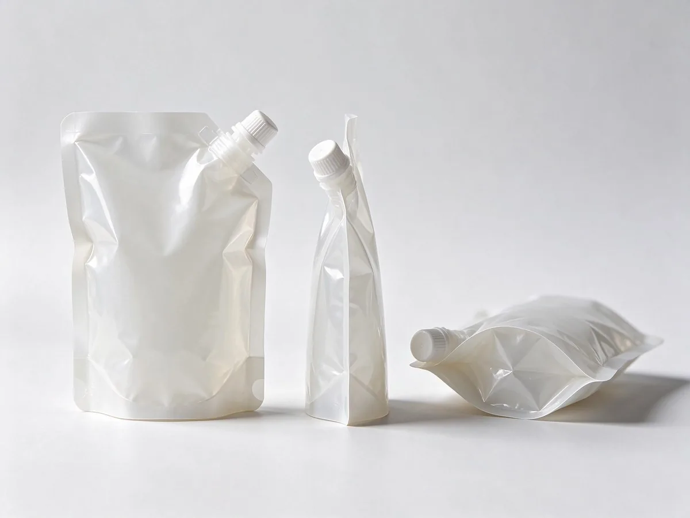

A refill pouch is not a shampoo bottle with different walls. The film has to survive the formula inside it, hold its aroma, and carry its own weight when full. Those three requirements decide the structure.

Sample shown for format reference only; any branding on the sample belongs to its respective owner. Production uses your own artwork and specifications.
The main difference from food packaging is that the filling is often aggressive: surfactants, solvents, acids and fragrance oils all interact with film layers. Compatibility is checked against the actual formula, not against a generic category.
Refill formats fail on chemistry and load, not on print quality.
Surfactants, solvents and acidic cleaners can swell, soften or stress-crack a PE layer. The seal and the film are matched to the formula rather than to the product name.
Aroma compounds are volatile and migrate through plain PE. Where scent is part of the product, a barrier layer keeps the fragrance in the pack over the shelf life.
A full 1 L or 5 L pouch loads its own base seal. Under-specified film or a weak seal means bulge, lean and leaks in transit — hence drop and stack testing before a full run.
Detergents and cosmetics carry mandatory hazard symbols, ingredient lists and local-language text. The printable area is planned around that legal footprint, not reduced after design.
Indicative starting points for common personal care and household lines.
| Shampoo and body wash | Spouted stand-up pouch, 250–750 ml, with a barrier layer where fragrance retention matters |
|---|---|
| Hand soap and sanitiser | Spouted pouch with a controlled-flow cap; alcohol-based formulas need a solvent-resistant inner layer |
| Lotion, cream and gel | Wide-spout pouch with an inner plug so thick product dispenses evenly |
| Dish soap and surface cleaner | Spouted or stand-up pouch, 500 ml–1 L, with surfactant-resistant film and a strong base seal |
| Laundry liquid and refill | Large-format 2–5 L bag, carton-supported, with a tap or wide spout depending on dispensing |
| Sample and travel size | Small spouted or flat pouch, 30–100 ml, often printed digitally for short runs |
Selected against the formula's aggressiveness, the fill weight, and whether aroma or active ingredients must be held.
A refill pouch has to sell itself on shelf next to the bottle it replaces. That usually means a strong front panel, a clear indication of the bottle it fits, and a back panel with the legal text. Digital printing keeps several SKUs and short refill runs in one order without a cylinder set per design, which suits seasonal scents and limited-edition lines; once a line repeats at volume, gravure becomes the lower unit cost route.
The formula decides the film before the design does.
What brands and fillers ask before moving a liquid into a pouch.
Spout types, caps and filling options in detail.
Spouted formats where food-contact rules apply.
Base seal, zipper and barrier construction options.
What drives unit price and how to lower it.
Short runs and multi-SKU refill lines without cylinder cost.
Send the formula type, fill volume, filling method and destination market, and we reply from Qingdao within one business day with a structure proposal.